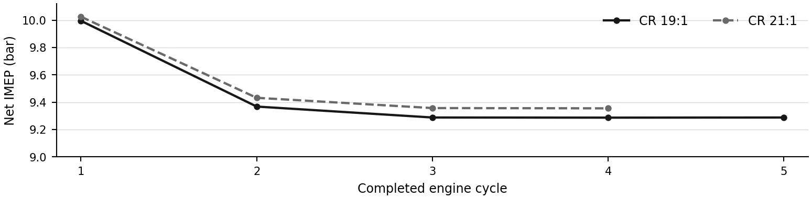

01 / Research question
What changes in engine performance are predicted when the geometric compression ratio is reduced while engine speed and other specified settings remain fixed?
The semester project modelled a single-cylinder, four-stroke, direct-injection diesel engine in Ricardo WAVE. The comparison held engine speed at 2000 rpm and examined the 21:1 reference and 19:1 alternative.

02 / Simulation approach
03 / Selected results
| Simulated parameter | CR 21:1 | CR 19:1 |
|---|---|---|
| Peak cylinder pressure | 70.01 bar | 63.48 bar |
| Brake power | 5.323 kW | 5.304 kW |
| Brake thermal efficiency | 36.61% | 36.46% |
| Brake-specific fuel consumption | 229.73 g/kWh | 230.69 g/kWh |
| Net IMEP | 9.355 bar | 9.288 bar |

04 / Engineering interpretation
Reducing compression ratio from 21:1 to 19:1 produced a substantially lower simulated peak cylinder pressure while predicted brake power changed only slightly. The reported brake thermal efficiency declined from 36.61% to 36.46%, and brake-specific fuel consumption increased marginally.
The larger pressure response compared with the smaller brake-output response is the central finding from this two-case comparison.